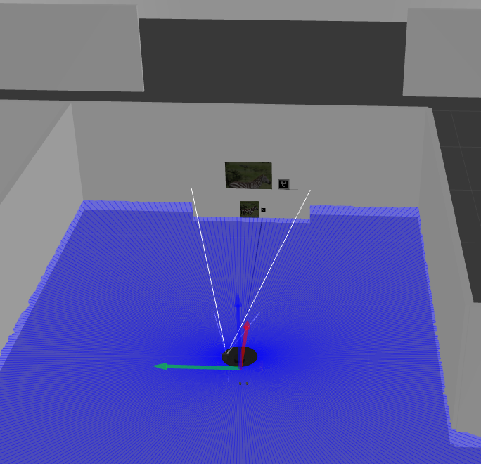
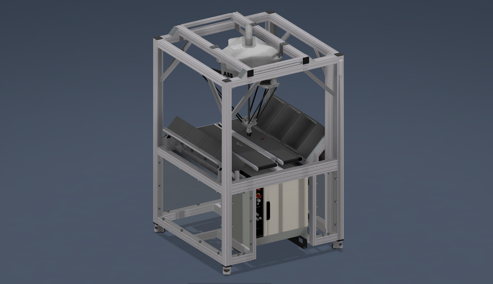
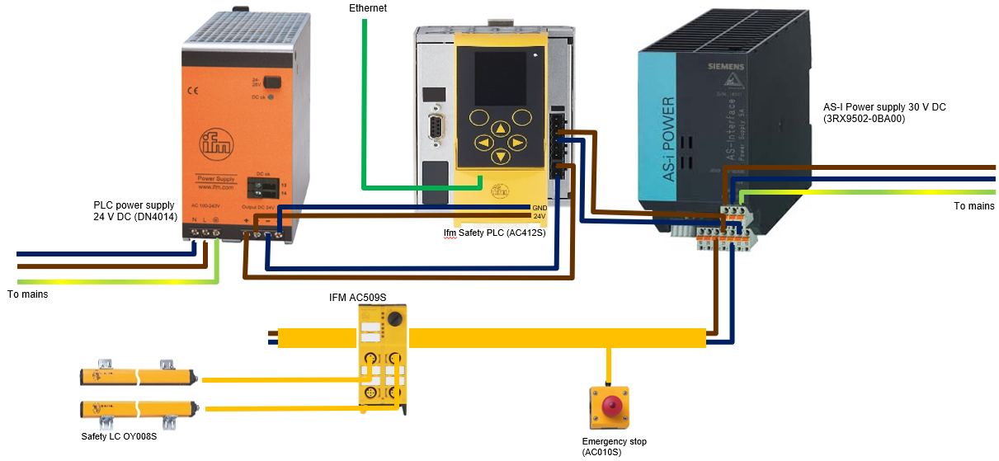
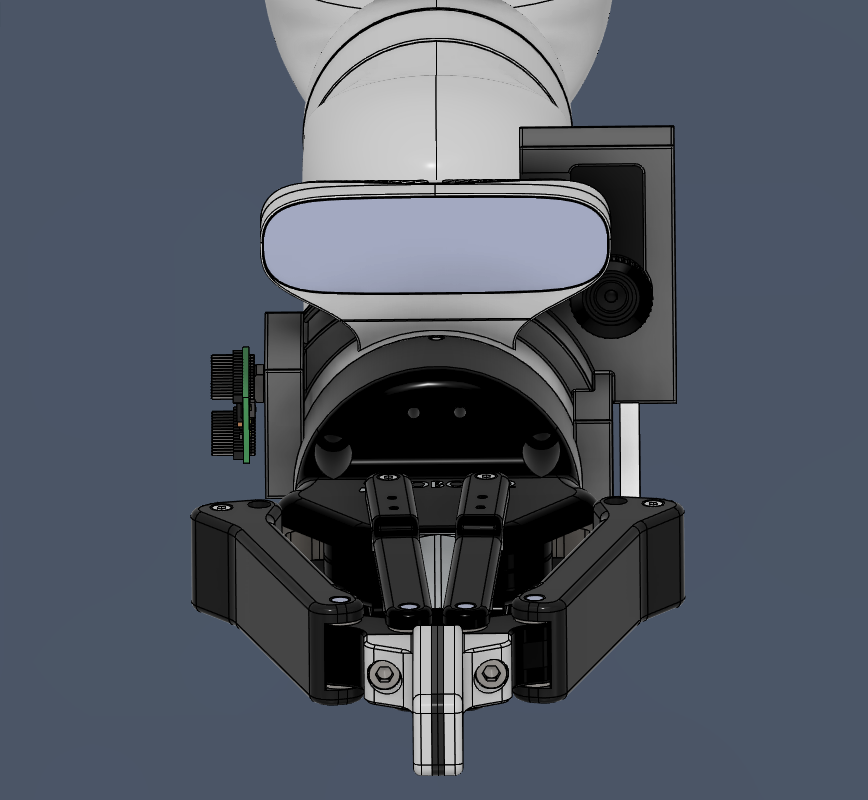
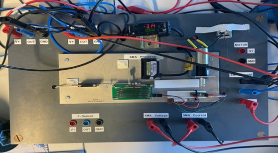
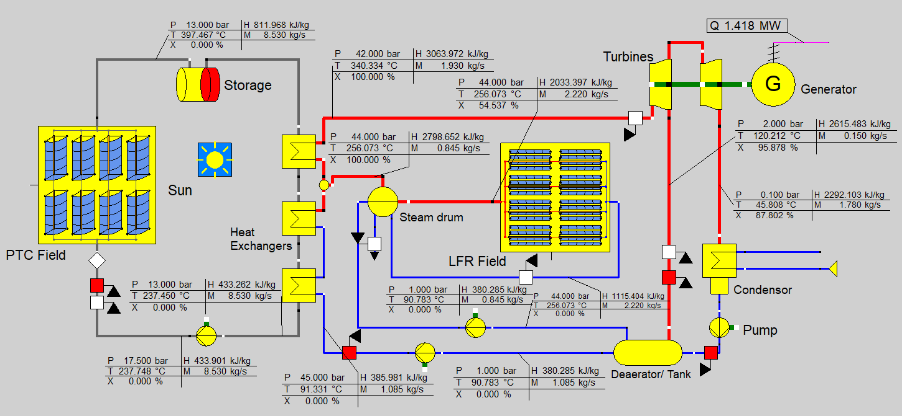

Hand-held HMI for UR3e
A project designed to provide a user-friendly interface for controlling the UR3e robotic arm with a wireless glove with an IMU.
A project designed to provide a user-friendly interface for controlling the UR3e robotic arm with a wireless glove with an IMU.

A project to enable a Turtlebot to navigate and explore mazes autonomously and identify images on a trained yolo model.
Developed and maintained code for the Denzo robot and Beckhoff PLC for automated stemcell research.

Frame design for the ABB flexpicker robot using the ITEM engineering tool.
A project to develop an automated sorting system using the ABB flexpicker robot.

Design and implementation of safety architecture for the ABB flexpicker robot ove AS-i interface.

Custom 3D printed sensor housing for a Kinova Gen 3 manipulator. The design houses Thermal camera, microphone, hall sensor, ardunio nano, laser pointer and a led ring light for usage in dark environments.

Nunc blandit nisi ligula magna sodales lectus elementum non. Integer id venenatis velit.

Programming of Wago PLC to control various Festo machines to simulate a production line.

Using Labview to control SMA actuators in a research setting.

Bachelor Thesis: Simulation analysis of Solar thermal powerplant

Nunc blandit nisi ligula magna sodales lectus elementum non. Integer id venenatis velit.
{kind=link}
{kind=link}
{kind=link}
{kind=link}
{kind=link}
{kind=link}